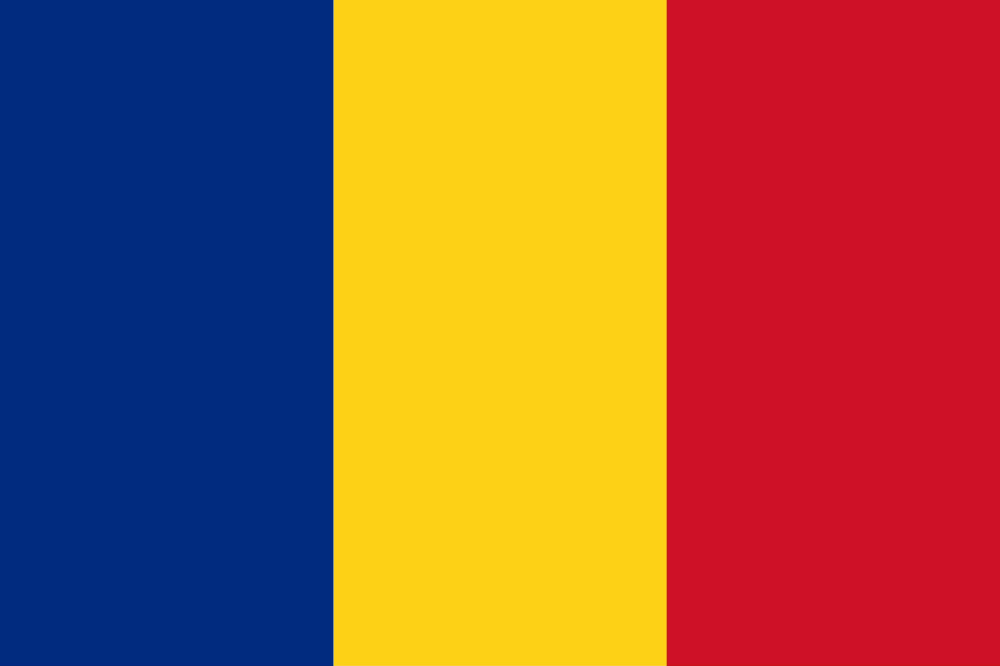
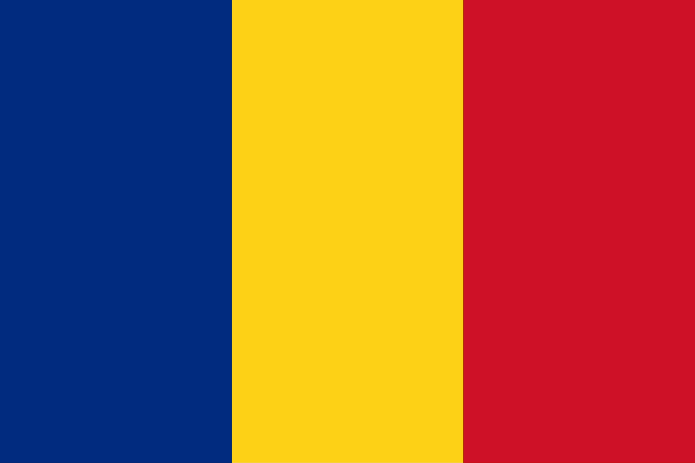

Wiązanie krawata jest czynnością codzienną dla wielu osób, lecz niewielu
zdaje sobie sprawę, że ten prosty rytuał można opisać za pomocą ścisłych
zasad matematycznych. To zagadnienie zostało dokładnie przeanalizowane
przez fizyków Thomasa Finka i Yonga Mao z laboratorium Cavendisha na
Uniwersytecie Cambridge. W swoich badaniach przedstawili oni model
matematyczny opisujący wiązanie krawata jako uporządkowaną sekwencję
ruchów, które można porównać do błądzenia przypadkowego po kracie
trójkątnej. Dzięki temu odkryli, że możliwe jest stworzenie 85 różnych
węzłów, z których tylko kilka jest powszechnie stosowanych.
Każdy węzeł krawata można zapisać jako sekwencję ruchów składającą się z
trzech podstawowych operacji: ruchu w prawo, ruchu w lewo oraz ruchu do
centrum. Początek węzła następuje od jednej z dwóch możliwości – ruchu w
lewo do środka lub ruchu w lewo na zewnątrz. Proces wiązania można
przedstawić jako serię przejść pomiędzy trzema regionami: prawym,
centralnym i lewym, przy czym każda zmiana kierunku może być traktowana
jako ruch w losowym kierunku.
Przykład na węźle prostym
zamieszczono w galerii zdjęć.
Matematyczna analiza prowadzi do wzoru określającego liczbę możliwych
węzłów w zależności od liczby ruchów szerszym końcem krawata: K=(1/3)
[2^(h-2) – (-1)^(h-2)]. Zastosowanie tego wzoru dla h ≤ 9 daje nam wynik
85. Thomas Fink i Young Mao zaproponowali cztery parametry matematyczne
opisujące węzeł krawata. Rozmiar węzła określa liczbę ruchów wykonanych
podczas wiązania. Kształt węzła określany jest liczbą ruchów
centralnych, które wpływają na szerokość węzła. Symetria to różnica
pomiędzy liczbą ruchów w prawo i w lewo. Im bardziej symetryczny węzeł,
tym estetyczniejszy wygląd. Balans to równomierność rozkładu ruchów w
całej sekwencji. Bardziej zrównoważone węzły są bardziej stabilne.
Optymalne węzły, według estetycznych kryteriów symetrii i balansu,
obejmują m.in. klasyczne węzły: four-in-hand, Windsor i pół-Windsor.
Analiza węzłów krawata pokazuje, że matematyka przenika
wiele codziennych czynności. Te same zasady znajdują zastosowanie w
różnych dziedzinach, takich jak kryptografia, projektowanie sieci
komputerowych czy biologia molekularna. To dowód na to, że matematyka
jest wszędzie – nawet w tak prostej rzeczy jak wiązanie krawata.
Amelia Ledzińska, Izabela Korzeniowska, klasa 3TP